原文连接:https://www.cnblogs.com/lixinjie/p/taste-spring-014.html
@Resource是Java的注解，表示一个资源，它具有双向的含义，一个是从外部获取一个资源，一个是向外部提供一个资源。
这其实就对应于Spring的注入和注册。当它用在字段和方法上时，表示前者。当它用在类上时表示后者。Spring只提供了对前者的支持。
该注解本身表示的是资源，资源的含义是很宽泛的。由于绝大部分情况下在使用Spring的时候，它的容器里都是普通的bean，所以这个注解就作为bean的注入来使用了。
对于依赖注入这个事情，整体可以分为三步：
1）找出需要被注入的元素，即标了注解的字段或方法
2）根据注解的描述，在容器中找出依赖的bean
3）完成注入，即设置字段的值或进行方法调用
我们可以分析下，这里面都会遇到哪些难处理的问题：
1）找出标注解的字段和方法很简单，使用Java反射即可。难的是如何表示它们，因为它们就是被注入的元素。
2）要在容器中找出依赖的bean，首先要知道依赖什么样子的bean，也就是要想办法把依赖需求给表示出来。
我们遇到的首个问题同样是如何表示，如何描述？等把它们解决了，才会进入如何去做的环节。
举一个例子吧，一个老师要将他们班40位同学的成绩排名。他遇到的第一个问题也是如何把40个成绩表示出来。
假设有三种方式吧：
1）写到excel表格里
2）存到数据库中
3）写到一张纸上
再来看看这三种方式下，完成排序的手段是：
1）使用excel的排序函数
2）使用sql的order by
3）人肉排序
可见，虽然最后都达到了结果，但是不同的表示方式对应的排序手段却相差很大，自然有的简单，有的难。
当然，也可以把40个成绩放入一个数组，然后使用类库中现成的排序工具进行排序。
不得不说，最终又回到了数据结构和算法上来。一个是表示或描述，一个是手段或方法。
一起来看看Spring是如何描述和如何操作的。
编程新说注：还是那句话，实际的处理会比较复杂，我们还是侧重从整体流程上把握。
被注入元数据
能够被注入的元素只有字段和方法，方法又包括setter方法和普通方法。（构造方法是被单独处理的，和此处的不混合）
所以Spring使用InjectedElement类，来表示被注入的元素，如下图01：
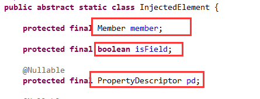
对于依赖的类型，自然就是字段的类型，属性的类型或普通方法的第一个参数类型（可以看出普通方法只能有一个参数）：如下图02：
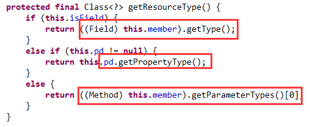
依赖的注入，也非常简单，是字段的话就set一下，是方法的话就invoke一下，如下图03：
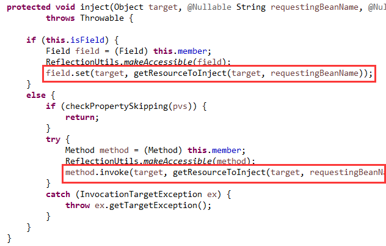
因此，关键是要把具体的值（也就是依赖）从容器中找出来。
以上这只是一个注入元素，一个类中可以有多个注入元素，所以还有一个以类为单位的描述。
所以Spring使用InjectionMetadata类，来表示一个类的注入元数据，如下图04：
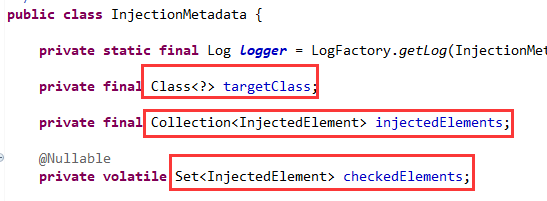
这里有两个注入元素的集合，一个是Collection类型，一个是Set类型，原因在上一篇文章中解释过了。
这两个类是Spring的通用抽象，用作所有注入元素和注入元数据的父类。
在处理@Resource注解时对InjectedElement类进行了扩展，如下图05：
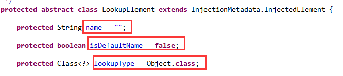
name表示依赖的bean名称，isDefaultName表示是否没有显式指定名称，lookupType表示依赖的类型。
接下来该读取注解@Resource的属性，为注入元素类的字段赋值了，如下图06：
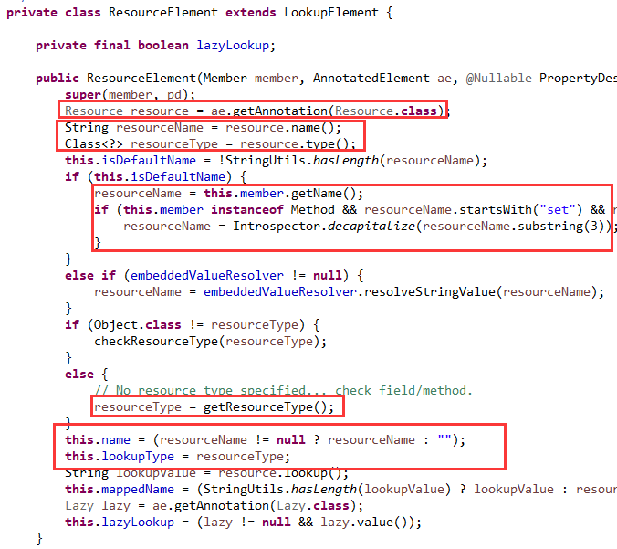
首先获取到这个注解，然后读出它的name和type属性值。如果name为空字符串，则表明没有显式指定名称，那就是用默认的名称。
如果是字段就用字段名，如果是普通方法就用方法名，如果是setter方法就用属性名。
如果type的值是Object.class，则表明没有显式指定类型，那就读取被注入元素的类型。
如果是字段就用字段类型，如果是普通方法就用第一个参数的类型，如果是setter方法就用属性类型。
这样就获取到了依赖的名称和类型。
以上这些信息都是对被注入元素的描述，下面还有对依赖的描述。
对依赖的描述
首先是注入点，InjectionPoint类，如下图07：
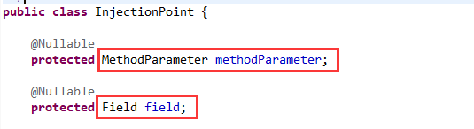
如果是方法的话，现在就要具体到参数了，如果是字段的话，则还是字段。
然后是依赖描述，DependencyDescriptor类，继承了注入点类，如下图08：
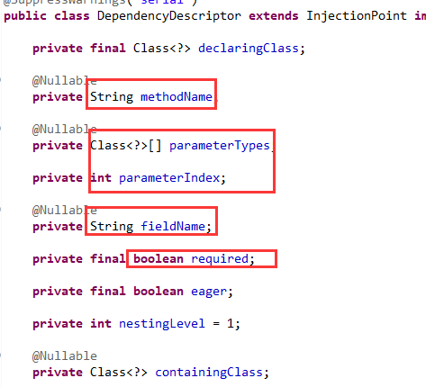
如方法名，方法的参数以及参数索引，字段名，是否必须等等。
最后就是对依赖描述的扩展，如下图09：
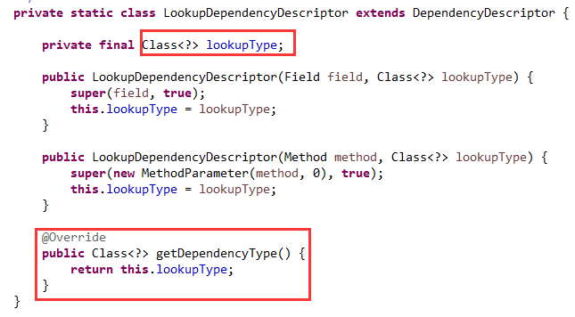
把上面获取到的类型作为依赖描述里的依赖类型。
以上这些就是对依赖的描述，接下来就是按照这个依赖描述来从容器中找出符合的依赖。
获取依赖的逻辑
下面是依赖的查找逻辑，如下图10：
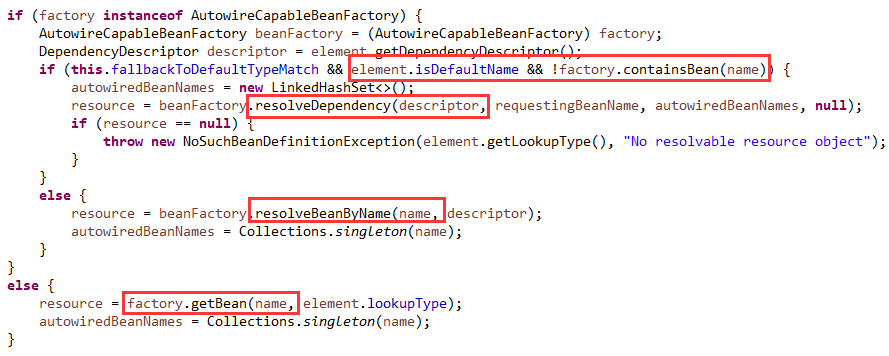
如果使用的是默认名称，且容器中不包含这个名称的bean，则按照类型去解析依赖。
否则就是显式指定了名称或容器中包含这个名称的bean，则按照名称去解析依赖。
当然，如果容器不具有自动装配功能的话，则按照名称去容器中获取一个bean。
编程新说注：
在面试时，几乎所有的人都会说@Resource是按名称进行依赖注入的，其实是不完全正确的。
这可能是受官方文档的影响，所以大家都是这么用的，所以总是会显式指定注解的name属性。
其实Spring对它的处理也支持按类型查找依赖的bean。
bean后处理器确定执行时机
最后，照例要和bean后处理器结合起来，是CommonAnnotationBeanPostProcessor这个类。
也是在postProcessMergedBeanDefinition这个方法里完成注入元数据的获取与缓存，已备后用，如下图11：
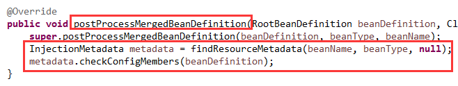
也是在postProcessProperties这个方法里完成依赖的注入，如下图12：
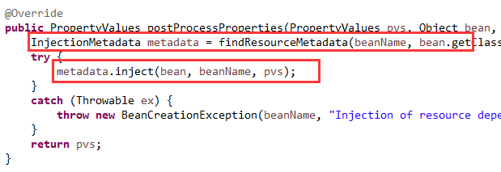
>>> 品Spring系列文章 <<<
品Spring：SpringBoot和Spring到底有没有本质的不同？
品Spring：SpringBoot轻松取胜bean定义注册的“第一阶段”
品Spring：SpringBoot发起bean定义注册的“二次攻坚战”
品Spring：注解之王@Configuration和它的一众“小弟们”
品Spring：对@PostConstruct和@PreDestroy注解的处理方法
>>> 热门文章集锦 <<<
爸爸又给Spring MVC生了个弟弟叫Spring WebFlux
【面试】吃透了这些Redis知识点，面试官一定觉得你很NB（干货 | 建议珍藏）
【面试】如果你这样回答“什么是线程安全”，面试官都会对你刮目相看（建议珍藏）
【面试】迄今为止把同步/异步/阻塞/非阻塞/BIO/NIO/AIO讲的这么清楚的好文章（快快珍藏）
【面试】一篇文章帮你彻底搞清楚“I/O多路复用”和“异步I/O”的前世今生（深度好文，建议珍藏）
作者是工作超过10年的码农，现在任架构师。喜欢研究技术，崇尚简单快乐。追求以通俗易懂的语言解说技术，希望所有的读者都能看懂并记住。下面是公众号和知识星球的二维码，欢迎关注！